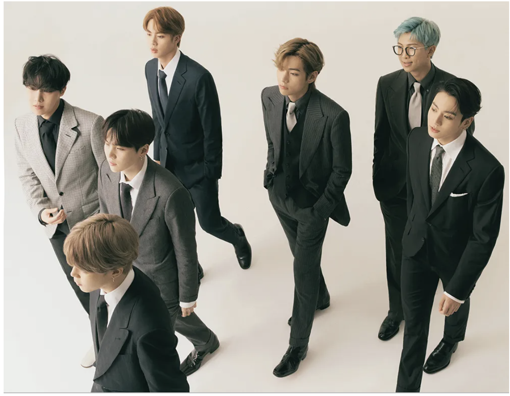
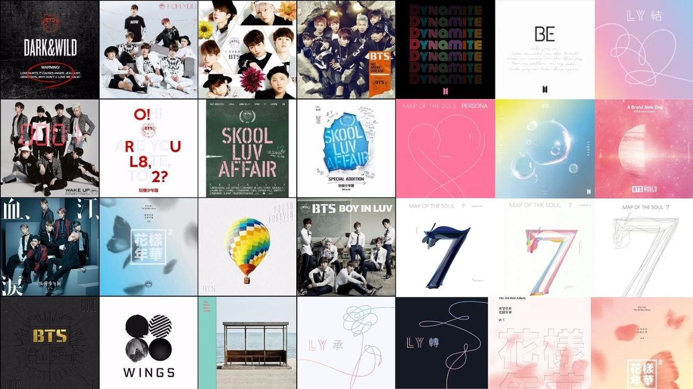

BTS (Korean: 방탄소년단; RR: Bangtan Sonyeondan; lit. Bulletproof Boy Scouts), also known as the Bangtan Boys, is a South Korean boy band formed in 2010. The band consists of Jin, Suga, J-Hope, RM, Jimin, V, and Jung Kook, who co-write or co-produce much of their material.
NAME
BTS stands for the Korean phrase Bangtan Sonyeondan (Korean: 방탄소년단; Hanja: 防彈少年團), which translates literally to 'Bulletproof Boy Scouts'.[4] According to J-Hope, the name signifies the group's desire "to block out stereotypes, criticisms, and expectations that aim on adolescents like bullets".[5][6] In Japan, they are known as Bōdan Shōnendan (防弾少年団).[7] In July 2017, BTS announced that their name would also stand for "Beyond the Scene" as part of their new brand identity.[8] This extended the meaning of their name to encompass the idea of growth "from a boy to an adult who opens the doors that are facing forward".
MEMBERS
HISTORY
BTS was formed in 2010, after Big Hit Entertainment CEO Bang Si-hyuk wanted to form a hip hop group around RM (Kim Nam-joon), an underground rapper well known on the music scene in Seoul. At the time, physical album sales were on the decline and digital revenues were not yet high enough to compensate. Seeing a need for diversified income streams, Bang decided to form an idol group instead, because of the potential for live concert performances and passionate support from fans of such groups. Many trainees refused to become part of an idol group, but J-Hope, RM, and Suga remained. Bang chose to vary from the usual, highly regimented idol groups and create one where the members would be individuals rather than an ensemble and free to express themselves. Auditions were held in 2010 with plans to launch the following year.The band members lived together, practicing up to 15 hours a day, and first performed before a small crowd of industry insiders in 2013.
MILITARY SERVICE AND CONTRACT RENWAL
On September 20, 2023, Hybe confirmed through a press release that BTS would renew their exclusive contracts. The members will sign these agreements sequentially, considering their military service, after a board resolution with Big Hit Music, solidifying their commitment to future projects starting from 2025 onwards. On September 22, 2023, Suga enlisted as a social worker. RM and V enlisted on December 11, 2023, followed by Jimin and Jung Kook on December 12.On June 12, 2024, Jin became the first member to complete his mandatory military service when he was officially discharged; he was followed by J-Hope on October 17, 2024, and by RM and V on June 10, 2025.All the members will have completed their military terms by the end of June 2025.
IMPACT
On April 29, 2019, Time magazine named BTS one of the 100 most influential people of the year, labeling them the "Princes of Pop". Billboard executive Silvio Pietroluongo compared the group's influence to that of the Beatles. MRC Data executive Helena Kosinski noted that "although BTS weren't the first to open the doors to K-Pop worldwide, they were the first to become mainstream. They don't just appeal to young people but also to the 50s and 60s age demographic." The first non-English speaking artist to make the Global Artist Chart in 2018, BTS was the second best-selling artists worldwide across multiple media platforms, second only to Drake. In 2020, BTS became the first non-western and non-English speaking artist to be named IFPI's Global Recording Artist of the Year. In South Korea, BTS accounted for 41.9 percent of album sales in the first half of 2019, up from their market share of 25.3 percent the previous year
MUSIC
Since their inception, BTS have emphasized hip hop as their musical base, largely due to the influence of RM and Suga's background as underground rappers; during early visits to the US, the group received mentoring from American rappers.
Bang Si-hyuk previously acknowledged that K-pop as a whole draws from black music, and author Crystal S. Anderson stated, "BTS's rising popularity in the US represents the continuation of the ways that K-pop functions as part of a global R&B tradition." T.K. Park and Youngdae Kim of Vulture deemed the track "Outro: Her" from Love Yourself: Her as the best example of the group's understanding of old-school hip hop, with raps inspired by Chuck D and Tupac and jazzy chords from the 1990s to create a classic hip hop sound.
The release of "Blood Sweat & Tears" in 2016 accelerated BTS's transition from a hip hop to a pop group. Park and Kim noted that the song draws from dancehall, reggaeton, and moombahton but opts for a "baroque mysticism" rather than the "partylike atmosphere of its influences". The group also began incorporating traditional Korean elements into their music. For example, their single "Idol" (2018) features an adlib from Pansori, a Korean form of operatic storytelling, and vocal imitations of the sounds of Korean janggu drums.
DISCOGRAPHY
- 2 Cool 4 Skool (2013)
- O!Rul82? (2013)
- Skool Luv Affair (2014)
- Dark & Wild (2014)
- The Most Beautiful Momment in Life Pt.1 (2015)
- The Most Beautiful Momment in Life Pt.2 (2015)
- Young Forever (2016)
- Wings (2016)
- You Never Walk Alone (2017)
- Love Yourself: Her (2017)
- Love Yourself: Answer (2018)
- Love Yourself: Tear (2018)
- Map of the Soul: Persona (2019)
- BTS World: Original Soundtrack (2019)
- Map of the Soul:7 (2020)
- Dynamite (2020)
- Be (2020)
- Butter (2021)
- Proof (2022)
FILMOGRAPHY
- Burn the Stage: The Movie (2018)
- Love Yourself in Seoul (2019)
- Bring the Soul: The Movie (2019)
- Break the Silence: The Movie (2020)
- BTS: Permission to Dance on Stage : LA (2022)
- BTS: Yet to Come in Cinemas (2023)
ONELINE SHOWS
- Run BTS (2015–present)
- BTS In the Soop (2020–2021)
- BTS: Bon Voyage (2016–present)
FANDOM (ARMY)
The group has a large, highly organized, online community of fans known as ARMY (Adorable Representative M.C. for Youth), which translates the group's lyrics and social media posts into other languages and matches charitable contributions of BTS's members.BTS interacted and engaged with their followers from their earliest days via social media, as well as via BTS Universe, an alternate storyline involving the members told through music videos, mobile games, books, short films, and more that gives fans room to theorize.[
CONCERTS
- The Red Bullet Tour (2014–2015)
- Wake Up: Open Your Eyes Japan Tour (2015)
- The Most Beautiful Moment in Life On Stage Tour (2015–2016)
- The Wings Tour (2017)
- Love Yourself World Tour (2018–2019)
- Map of the Soul Tour (2020; cancelled)
- Permission to Dance on Stage (2021–2022)